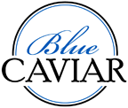

Conch salad by the sea with a Kalik, award-winning fine dining in an historical mansion, burgers while watching the game, to mangoes freshly picked from the tree: the variety of culinary choices and settings offers something perfect for all tastes, budgets and occasions. While everything from French to Italian or Asian-fusion is available on the island, Bahamian cuisine offers a full cultural adventure.
Bahamian cuisine centers on the oceans’ bounty combining Spanish, West African and British tastes and styles. Conch (pronounced ‘konk’), Crawfish (rock lobster), Grouper, Red Snapper and crab are local favorites. Conch is a mollusk with firm white flesh that is prepared in a variety of ways including conch salad, conch fritters, cracked conch, and conch chowder. Other specialties include boiled fish and grits for breakfast, Bahamian stew fish, crawfish with peas ‘n’ rice and Johnny cake. For dessert, try fresh tropical fruit, guava duff, pineapple or coconut tart, and bread pudding. If you would like to take a full journey through Bahamian cuisine, ask us about the excellent food tours.
There are many restaurant options available on island. We have listed some of the Sandyport area restaurants below. Our concierge team though is truly connected and can assist you with making reservations throughout the island.

The Blue Caviar on the Beach offers French Café Bistro and Patisserie style food situated on the Sandyport Beach Resort’s Ocean Beach at The Blue Sail and adjacent to The Lookout. They are open for Continental Breakfast from 8am to Noon, and serve a small Hot Breakfast Menu from 8am to 10am. The selection includes Croissant, Pain au Chocolat (chocolate pastry), Wood Oven baguette and Large Bread, Assortment of Cookies and Shortbread Biscuits, classic French Pastries such as Lemon Tart, Chocolate Éclair, Apple tart along with a vast array of savory items including quiches, Panini’s, Croque Monsieur. They also offer Cappuccino, Latte, Espresso and Hot Chocolate made from a classic Italian espresso machine and a selection of tea that includes herbal tea.
Twisted Lime Sports Bar and Grill is located on the water in Sandyport's Marina Village. Enjoy beautiful scenery and décor which brings together modern Caribbean tranquillity with a new age feel. Whether you are looking to catch the game on any of their 18 flat screen televisions or grab a bite to eat, Twisted Lime is the place for you!
Reservations: (242) 327-0061
https://www.facebook.com/twistedlimenassau
The Blue Sail Restaurant and Bar is a casual dining Mediterranean French fusion restaurant overlooking the Sandyport Beach Resort's Ocean Beach with spectacular views over the water. It boasts one of the islands most spectacular views. The restaurant offers a combination of casual chic with delectable dishes with views of the ocean. Pizzas from the wood burning oven and local Bahamian favorites are also offered. The 360 degree Bar is the ideal place for sun-downers. Open for Lunch and Dinner. They also provide beach service on request
 to reach us.
to reach us.
 to reach us.
to reach us.